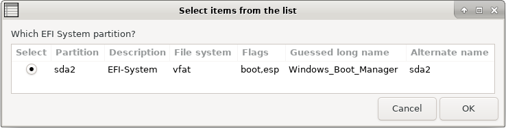
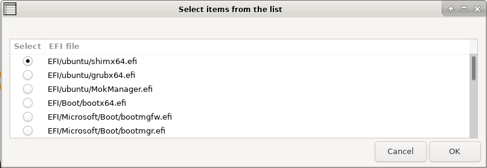

Choose your language.
Create UEFI Boot Entry - Rescapp - Documentation
Newest computers start up thanks to the newest (from 2015 onwards) UEFI boot system.
-
Scenario 1: You messed up your UEFI boot menu and lost access to one your operating systems.
-
Scenario 2: You want to add one of your operating systems to your current UEFI boot menu.
This option lets you add one of the present EFI files (which usually serve to boot into an Operating System) to your UEFI boot menu. The entry will be the last one on your UEFI boot menu.
Please note that in some UEFI systems you might need to press an special hotkey (such as F8 or F10) in order to show up the UEFI boot menu in order to be able to choose your added UEFI boot entry.
-
Step 1Rescapp searches for EFI partitions on your system.
-
Step 2If such partitions have been found, Rescapp displays them. At the same time you are prompted:
Which EFI System partition? You are supposed to choose, your EFI System partition and press the OK button.

-
Step 3Rescapp searches for EFI files present, on your EFI System partition.
-
Step 4You are prompted:Select EFI file You are supposed to, choose the EFI file which you want an EFI entry to be created.

-
Step 5You are informed about the Create UEFI Boot Entry process.You either get:
 [SUCCESS] A new UEFI Boot entry was added OK! :)
[SUCCESS] A new UEFI Boot entry was added OK! :)
or
 [ERROR] A new UEFI Boot entry addition went wrong! :(
[ERROR] A new UEFI Boot entry addition went wrong! :(